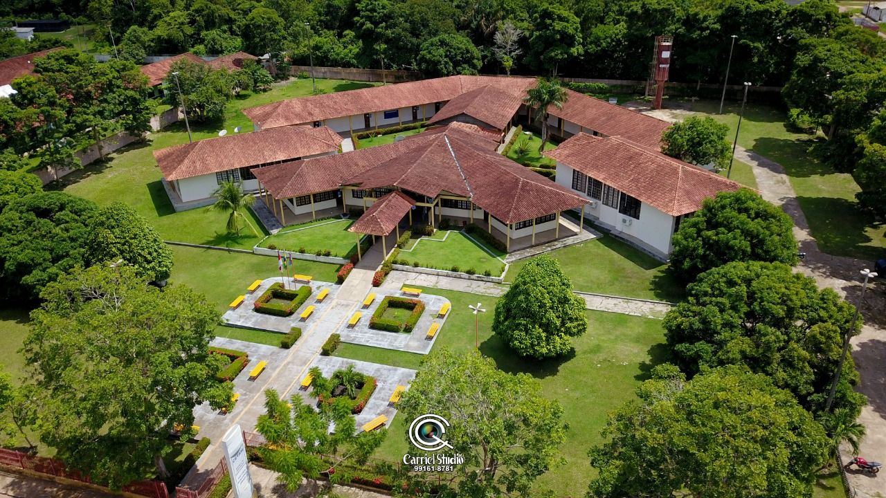

Moysés Banarrós Israel

CETAM em Itacoatiara: Uma Contribuição de Moysés Benarrós Israel para a Educação Profissional
A educação profissional em Itacoatiara deu um salto significativo com a inauguração da Escola de Educação Profissional Moysés Benarrós Israel, uma unidade do Centro de Educação Tecnológica do Amazonas (CETAM), no dia 27 de setembro de 2008. A concretização desse projeto só foi possível graças à generosa doação de um terreno feita por Moysés Benarrós Israel, empresário e filantropo que sempre declarou compromisso profundo com o progresso social e educacional no estado do Amazonas.
O CETAM Itacoatiara foi criado com o objetivo de oferecer qualificação técnica e profissional para jovens e adultos da cidade e de regiões vizinhas. Sua instalação ampliou o acesso ao ensino técnico de qualidade, permitindo que os alunos adquirissem habilidades práticas e específicas para entrada no mercado de trabalho. A unidade passou a ser uma referência local em educação tecnológica, fortalecendo setores como comércio, indústria e serviços na região.
A escolha do nome da instituição para homenagear Moysés Benarrós Israel é um reconhecimento de sua visão e altruísmo. Ele acreditava que a educação técnica era fundamental para o desenvolvimento sustentável de Itacoatiara e para a capacitação de mão de obra desenvolvida no Amazonas. Sua doação não foi apenas um gesto de generosidade, mas também um investimento no futuro da região, permitindo que centenas de pessoas tivessem acesso a oportunidades que antes eram inacessíveis.
Desde sua apresentação, o CETAM em Itacoatiara tem desempenhado um papel essencial no fortalecimento da economia local. Os cursos oferecidos abrangem áreas estratégicas que atendem às demandas do mercado, como administração, informática, segurança do trabalho, entre outras. Além disso, a instituição promove projetos que incentivam o empreendedorismo, formando os alunos não apenas para conseguir empregos, mas também para criar seus próprios negócios.
A contribuição de Moysés Benarrós Israel para a criação do CETAM em Itacoatiara é um exemplo inspirador de como o compromisso com a educação pode transformar comunidades. Seu legado permanece vivo nos sonhos realizados por cada estudante que encontra no CETAM uma oportunidade de mudar sua história. Itacoatiara e o Amazonas são profundamente gratos a esse visionário, cujo impacto continuará a ser sentido por gerações.